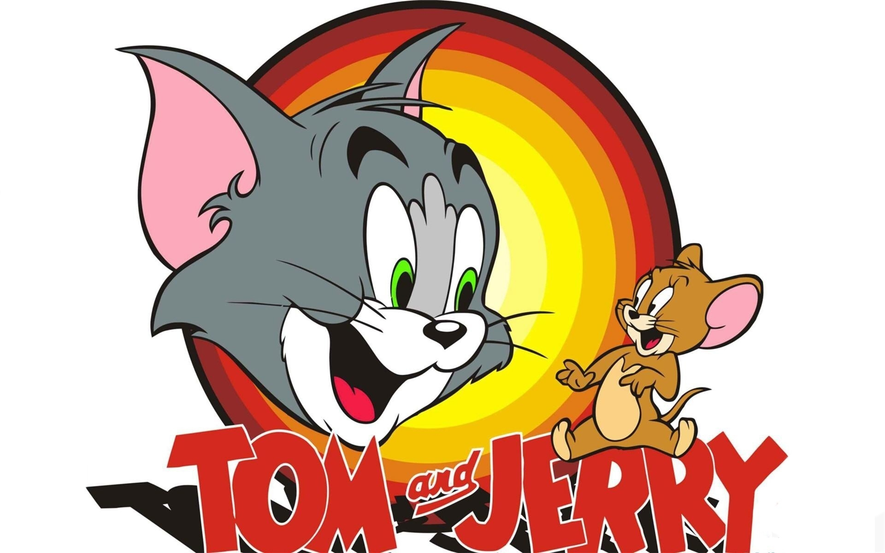

JPEG (Joint Photographic Experts Group) is a widely used image format known for its efficient lossy compression, which reduces file size while maintaining acceptable image quality. Ideal for photographs and complex images, JPEG supports millions of colors, making it a popular choice for web use, digital photography, and online sharing. However, repeated saving can lead to quality loss, so it's best to use it for final versions rather than ongoing edits.
This cartoon show was my alltime favourite cartoon show from my childwood to now.
To go to back to Main page Click here
>